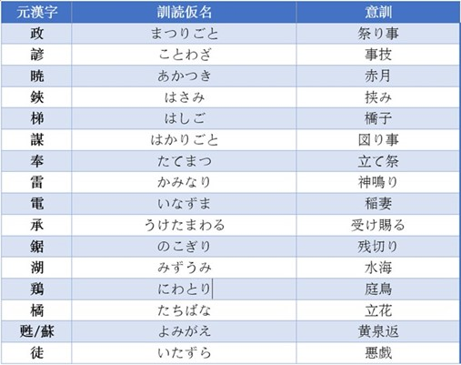
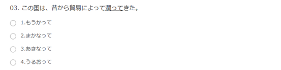
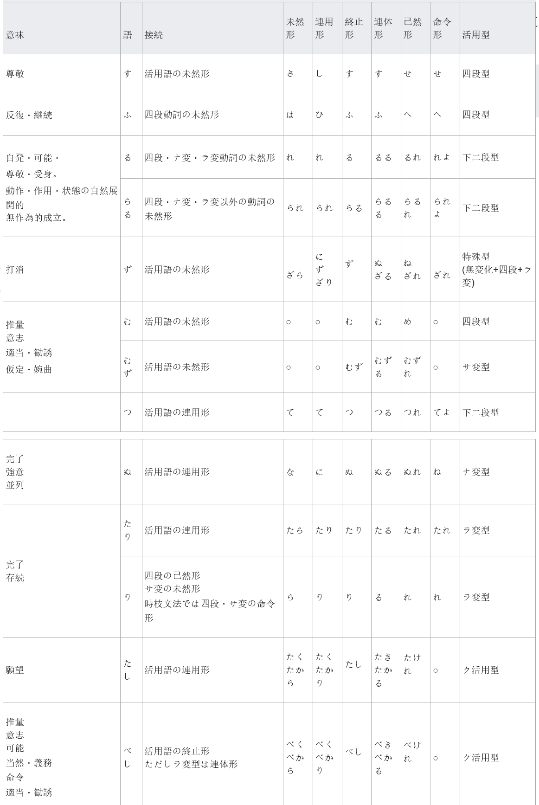

日文分为「音読み」和「訓読み」，因为日文有着音读这个与汉语相似的点，被认为是中国人理解日文先天的优势，网上想学习者介绍的音读记忆法也数不胜数，可令人遗憾的是，训读作为国人较为陌生的语言点，我参阅了许多文献，除了一些专业的字源学研究外，几乎没有供中高级学习者参考的记忆规律。对此，我想承接上篇文章详细谈谈训读。 先叠一个甲，讲一个故事： 北宋时王安石曾引起过字源学讨论。不过他的字源学，只是字的结构与来源的研究，不是用比较方法，而是凭个人的幻想。王安石相信这是独得之秘，是对学术上不朽的贡献，至老年时犹苦研不辍，成书二十五卷。碍于当时他的地位，众人只是敢怒不敢言。像王安石这样研究一个字构成的各种理由，为什么一个字由某些偏旁组织起来就表示某种意义，那倒是容易而有趣。王安石的字源说有五十条左右流传下来，都是供茶余酒后的笑谈。中文里有一个”波”字，王安石不管语音学的道理，只想从意义上找点趣谈。这个”波”字触动了王安石丰富的想象，他说”波”者”水”之”皮”也。一天苏东坡遇见他，向他戏德道：”’波’若是’水’之’皮’，则’滑’就是’水’之’骨’了。”王安石违反中国字构成的基本原则。有时他割裂字根为二，再另与一个部首相接，像”富”字一例，真会使语言学家啼笑皆非的。 我接下来想讲的理论，跟王安石的拆字有相似之处，不过我仅仅想从学习者的视角来研究这个问题，详细叙述一下如何利用”拆”来简化训读记忆。

上次我列举了一些长难名词的拆解方式，但在研究中，我发现一些更为常见的动词对我们而言更难记忆，这也是考试的重中之重。
偏る→片寄る
这个很好理解，「寄る」在日文中本身就是靠近、集中的意思，如「駅から西に寄った所に山がある」，类似地表达还有「年寄り」，靠近年纪大的，便是老年人，而「片」则是一边、一方。靠近一方，即是“偏”。
傾く→片向く
俯く→うつ向く
仰むく→仰向く
这三个词的词根都是「向く」，即朝向，不同的前面的名词，限定了朝向的方向。这种用词跟来记忆的方法后面会详细叙述。
占う→占なう：占卜，算命
補う→補なう：补充，贴补
養う→やしなう：养育，供养
失う→うしなう：失去
商う→あきなう：贩售
担う→になう：肩负，承担
伴う→共なう：伴随，陪伴
償う→賠なう：赔偿，赎罪
行う→おこなう：行，做，办
賄う→まかなう：供给，提供，维持
这几个词有如下相似之处：
1.外形。都是一个汉字＋う。行う
2.都有一个统一的词缀：～なう。
3.读音。都是由4个假名构成。おこなう。
4.都是训读动词。
5.常用，且必考。在N1N2考试中反复出现。
6.都是从其他基础词汇变来的，尤其是从名词变化而来。なう
请看以下真题：

2010年7月N1问题1，第3小题
其中2.3.两个词都是以なう结尾的动词。而なう就是中高级动词的后缀。《大辞林》对なう的解释：「なう」：名詞、形容詞の語幹に付いて動詞を作り、その行為をする意を表す。简单说，なう，就是一个常用动词后缀，作用就是将前面的词变成动词。所以记忆时，我们只需记住前面的名词部分，大大减少了记忆量。
可能到这里也许有人会思考：「なう」这个词根的来源是什么？同词根的词之间是否具有一定的相似性？除了「なう」以外还有其他明显的词根存在吗？ 这也是我在学习过程中发现的日文语源学的问题，随着语言的演变，许多后缀的形式发生了变化，但其本质含义却是相近的，学习文法时老师一定强调过：「-ず」与「-ない」、「-まい」与「-ないだろう」、「-せよ」与「-しろ」的意义相同，相关的文法书相信也有常见古い言葉を使った言い方的归纳整理，但除了短语外，我们在动词的记忆上也可以用这种演化的思路，我想在这里先引出古典日语动词后缀形态的概念：
古い言葉を使った言い方 助動詞（部分）

在英文学习时，我们能很直观地感受到词缀对构词的作用，如“perceived“的词缀“ed”，既可以理解为过去时(tense)，也可以理解为被动语态(voice)。与英语的词缀相同，日文的词缀也具有时态和形态的修饰作用，例如「竹取物語」的开篇第一句话：「今は昔、竹取の翁と言ふ者有りけり」，此处的 「けり」在时态上表示过去时，同时又在语态上表示传言，等价于现代日语中的「あったそうだ」。那么理解了这点后对于词汇记忆有什么帮助呢？
下面介绍一些我在学习中总结出的前（后）缀和其代表的抽象意义：
1、 さ-（sa-）：最……，在……的顶峰，……程度深
彷徨う（さまよう）＝さ＋迷う
狭霧（さぎり）＝さ＋霧
最中（さなか）＝さ＋なか
五月雨（さみだれ）＝さ＋乱れ
騒ぐ（さわく）＝さ＋わく
2、 た-（ta-）：数量多，程度深，时间长
蓄える（たくわえる）=た+加える
達する（たっする）＝た＋（っ）する
容易い（たやすい）＝た＋易い
辿る（たどる）＝た＋とる
保つ（たもつ）=た+持つ （「た」推测可能来自古日语「手（て）」的变音。）
3、も-（mo-）：程度非常高
踠く（もがく）=も+掻く
齎す（もたらす）＝も＋たらす
最早（もはや）=も+早 这个很好理解，现代日语中「も」也能够表示强调。
接下来是一些常见后缀：
1、なう=する 动词化
商（あき）→商う；共→伴う；荷→担う 贖（あが）→あがなう；継ぐ→つぐなう
音（おと）→訪う（おとなう）→訪れる→音連れる いざ（表示劝诱的语气词）→誘う（いざなう）→誘う（さそう）
2、がる、まる、ぶる 表示主观感受，或样态的变化
怖い→怖がる；哀れ→哀れがる 鋭し→尖る；強い→強がる；痛い→痛がる 深い→深まる；固い→固まる；
3、(ア)す、(ア)かす 他动词化
探ぐる→探がす；帰る→返す；動く→動かす 伸びる→伸ばす；怖じる→脅す；壊れる→壊す；
荒れる→荒らす；散る→散らかす；怯える→脅かす； 冷える→冷やかす
4、 つ 通「す」。他动词化
誤る→誤つ；煽る→煽つ；分かる→分かつ
5、(ア)る 自动词化
加える→加わる；分ける→分かる；上げる→上がる 刺す→刺さる；纏う→纏わる；挟む→挟まる
理解词源后，以上规律在中高级记忆自他动词和训读动词时有一些帮助。
最后想分享一段最近在看的《雪国》里的文本，写得很美个人十分喜欢，与中译相比，我认为英译似乎更加：
“一面の雪の凍りつく音が地の底深く鳴っているような、厳しい夜景であった。月はなかった。噓のように多い星は、見上げていると、虚しい速さで落ちつつあると思われるほど、あざやかに浮き出ていた。星の群が目へ近づいて来るにつれて、空はいよいよ遠く夜の色を深めた。
It was a stern night landscape. The sound of the freezing of snow over the land seemed to rear deep into the earth. There was no moon. The stars, almost too many to be true, came forward so brightly that it was as if they were falling with the swiftness of the void. As the stars came nearer, the sky retreated deeper and deeper into the night color.